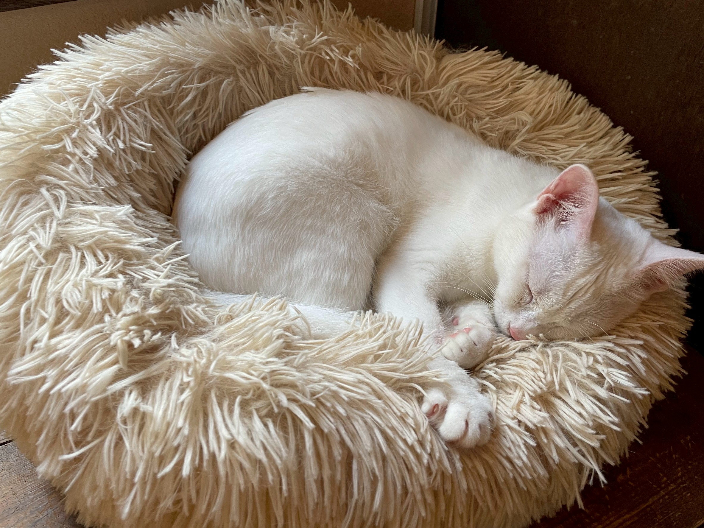

Anicom Text
アニコムに関するご案内
鎌倉ねこの間はアニコム損保の代理店です。
鎌倉ねこの間の紹介でアニコム損保のペット保険を契約されると、鎌倉ねこの間の保護猫譲渡活動を継続的に応援していただくことになります。「うちの子もそろそろかな？」「ちょうどペット保険を申し込もうと考えていた」という方、以下のバナーよりアニコム損保のペット保険をご検討のうえ、お申し込みくださいませ。
鎌倉ねこの間から譲渡した保護猫は10年間で500頭を超えます（2026.３月現在）。今後も細く長く、この活動を続けていければ、と考えています。
とはいえ、やはり預かり猫が病気になり診療費がかさむこともあります。また毎年夏冬の時期にお客様が減ることを踏まえ、保護活動を継続していくには対策が必要だと考えるに至りました。そんな折、ペット保険のアニコム損保の営業の方よりお誘いがあり、アニコム損保の代理店登録を済ませた経緯があります。
これを決めた主たる理由は、
◆譲渡した猫が病気やけがをした際に、気軽に病院に行ってほしい。
◆猫の飼育には経済的負担がかかることを理解いただきたい。
◆毎月のペット保険料を支払える経済的状況がある方に譲渡したい。
◆診療費が払えない、という理由で飼育放棄されるのを防ぎたい。
…大きくはこの4点です。
そしてもうひとつの理由は、
鎌倉ねこの間を通してペット保険をご契約いただければ、代理店手数料をねこの間の活動資金にできることです。つまり、ねこの間を介してペット保険に入っていただくことで、継続的にねこの間を応援していただくことになるわけです。
まだ未契約の方で、「そろそろ申し込もうと考えていた」という方がいらしたら、ぜひ鎌倉ねこの間を通してペット保険をご契約いただければ大変ありがたく、どうぞよろしくお願い申し上げます。
アニコム損保のペット保険のお申込みはこちらから！
↓ ↓ ↓
※お手数おかけしますが、以下バナーからのお手続きはサファリからお願い致します。ＳＮＳ等のアプリからでは手続きできません。

どうぶつ健保 ふぁみりぃ ・ ぷち ・ しにあW1905-0095
個人情報保護に関する基本方針【プライバシーポリシー】 当店は、個人情報保護の重要性に鑑み、また保険業に対するお客様の信頼をより向上させるため、個人情報の保護に関する法律（個 人情報保護法）、その他の関係法令、関係官庁からのガイドラインなどを遵守して、個人情報を厳正・適切に取扱うとともに、安全管 理について適切な措置を講じます。当社は、個人情報の取扱いが適正に行われるように、従業者への教育・指導を徹底し適正な取扱い が行われるよう取組んでまいります。また、個人情報の取扱いに関する苦情・ご相談に迅速に対応し、当店の個人情報の取扱い及び安 全管理に係る適切な措置については、適宜見直し、改善いたします。 １．個人情報の取得 当店は、業務上必要な範囲内で、かつ、適法で公正な手段により個人情報を取得します。 ２．個人情報の利用目的 当店は生体譲渡業を営んでおり、当該業務の遂行に必要な範囲においても、取得した個人情報を利用します。また、保険会社から保 険募集業務の委託を受けて、取得した個人情報についても、当該業務の遂行に必要な範囲内で利用します。当店において、お預かりし ている個人情報と具体的な個人情報の利用目的は次のとおりであり、これ以外の他の目的に利用することはありません。 (1) お預かりしている個人情報 (氏名、生年月日、住所、電話番号、メールアドレス) (2)具体的な利用目的 ＜お客様の個人情報＞ 1 お迎えいただいたどうぶつに対するアフターサービスの提供のため 2 当店が取扱う保険商品および、これらに付帯・関連するサービスの提案・提供のため ※当店に対し、保険業務の委託を行う保険会社の利用目的は、保険会社のホームぺージ (以下)に記載しております。 ・アニコム損害保険株式会社（https://www.anicom-sompo.co.jp/） なお、上記の利用目的の変更は、相当の関連性を有すると合理的に認められている範囲内で行います。変更した場合にはその内容を ご本人に通知する、もしくはホームぺージなどにより公表します。 ３．個人データの安全管理措置 当店は取扱う個人情報について、漏えい、滅失または毀損の防止、その他の適切な管理のための措置を以下のとおり講じています。 ＜基本方針の策定＞ ・個人情報の適正な取扱いの確保、質問及び苦情処理の窓口周知のための本基本方針を策定 ＜個人データの取扱いに係る規律の整備＞ ・個人データの取得、利用、保存等を行う場合の基本的な取扱い方法を整備 ＜組織的安全管理措置＞ ・整備した取扱方法に従って個人データが取扱われていることを責任者が確認 ＜人的安全管理措置＞ ・個人情報の取扱いに関する留意事項について、従業者に定期的な研修を実施 ＜物理的安全管理措置＞ ・個人情報を取扱う機器・電子媒体及び書類等の盗難又は紛失等を防止するための措置を実施 ＜技術的安全管理措置＞ ・アクセス制御を実施して、担当者及び取扱う個人情報の範囲を限定 ・個人情報を取扱う情報システムを外部からの不正アクセス又は不正ソフトウェアから保護する仕組みを導入 ４．個人データの第三者への提供 当店は、次の場合を除き、ご本人の同意を得ることなく、個人情報を第三者に提供することはありません。 (1)法令に基づく場合 (2)人の生命、身体又は財産の保護のために必要がある場合であって、本人の同意を得ることが困難であるとき。 (3)公衆衛生の向上又は児童の健全な育成の推進のために特に必要がある場合であって、本人の同意を得ることが困難であるとき。 (4)国の機関若しくは地方公共団体又はその委託を受けた者が法令の定める事務を遂行することに対して協力する必要がある場合 であって、本人の同意を得ることにより当該事務の遂行に支障を及ぼすおそれがあるとき。 また、個人データを第三者に提供したとき、あるいは第三者から提供を受けたときは、提供・取得経緯等の確認を行うとともに、 提供先・提供者の氏名等、法令で定める事項を記録し、保管します。 ５．センシティブ情報の取扱い 当店は、要配慮個人情報（人種、信条、社会的身分、病歴、前科・前歴、犯罪被害情報などをいいます）ならびに労働組合への加 盟、門地および本籍地、保健医療および性生活（これらのうち要配慮個人情報に該当するものを除く）に関する情報（センシティブ情 報）については、次の場合を除き、原則として取得、利用または第三者提供を行いません。 (1) 法令等に基づく場合 (2) 人の生命、身体又は財産の保護のために必要がある場合 (3) 公衆衛生の向上又は児童の健全な育成の推進のため特に必要がある場合 (4) 国の機関若しくは地方公共団体又はその委託を受けた者が法令の定める事務を遂行することに対して協力する必要がある場合 (5) 個人情報保護法第20条第２項第６号に掲げる場合にセンシティブ情報を取得する場合、同法第18条第３項第６号に掲げる場合 にセンシティブ情報を利用する場合、または同法第27条第1項第７号に掲げる場合にセンシティブ情報を第三者提供する場合 (6) 源泉徴収事務等の遂行上必要な範囲において、政治・宗教等の団体若しくは労働組合への所属若しくは加盟に関する従業員等の センシティブ情報を取得、利用又は第三者提供する場合 (7) 相続手続による権利義務の移転等の遂行に必要な限りにおいて、センシティブ情報を取得、利用又は第三者提供する場合 (8) 保険業その他金融分野の事業の適切な業務運営を確保する必要性から、本人の同意に基づき業務遂行上必要な範囲で センシティブ情報を取得、利用又は第三者提供する場合 (9)センシティブ情報に該当する生体認証情報を本人の同意に基づき、本人確認に用いる場合 ６．匿名加工情報の取扱い (1)匿名加工情報の作成 当店は、匿名加工情報（法令に定める措置を講じて特定の個人を識別することができないように個人情報を加工して得られる 個人に関する情報であって、当該個人情報を復元することができないようにしたもの）を作成する場合には以下の対応を行いま す。 ・法令で定める基準に従って、適正な加工を施すこと ・法令で定める基準に従って、削除した情報や加工の方法に関する情報の漏えいを防止するために安全管理措置を講じること ・作成した匿名加工情報に含まれる情報の項目を公表すること ・作成の元となった個人情報の本人を識別するための行為をしないこと (2)匿名加工情報の提供 当店は、匿名加工情報を第三者に提供する場合には、提供しようとする匿名加工情報に含まれる個人に関する情報の項目と提供 の方法を公表するとともに、提供先となる第三者に対して提供する情報が匿名加工情報であることを明示します。 ７．個人情報保護法に基づく保有個人データの開示、訂正、利用停止など 個人情報保護法に基づく保有個人データに関する開示、訂正または利用停止などに関するご請求については、請求者がご本人である ことを確認させていただいたうえで、次の場合を除き、遅滞なく手続きを行います。なお、開示しない場合または当該保有個人データ が存在しない場合には、その旨を回答します。保険会社や他社の保有個人データに関しては当該会社に対してお取次ぎいたします。 ・本人または、第三者の生命、身体、財産その他の権利利益を害するおそれがある場合 ・当店の業務の適正な実施に著しい支障を及ぼすおそれがある場合 ・法令に違反することとなる場合 また当店は、本人またはその代理人から、当該保有個人データに関して、訂正、追加、削除のご請求、または利用の停止、消去、第三 者提供の停止のご請求があった場合は、調査のうえ法令に従って対応させていただきます。なお、上記開示などのお手続きについては 所定の手数料をいただきます。手続きを希望される方は、下記お問い合わせ先までお申し付けください。 ８．お問い合わせ先 ご連絡先は以下のとおりです。また保険契約に関する照会については、各保険会社の窓口にもお問い合わせいただくことができま す。なお、照会者がご本人であることを確認させていただいたうえで、対応させていただきますので、あらかじめご了承願います。
＜代理店名＞鎌倉ねこの間
＜電話番号＞0467-40-5379
＜ホームページ＞ https://www.kamakuranekonoma.com/
2022年4月1日改定
鎌倉ねこの間 住所：神奈川県鎌倉市笛田6-9-7
代表者：永田 久美子
H2202-0026 22年2月 YG008-2202-03